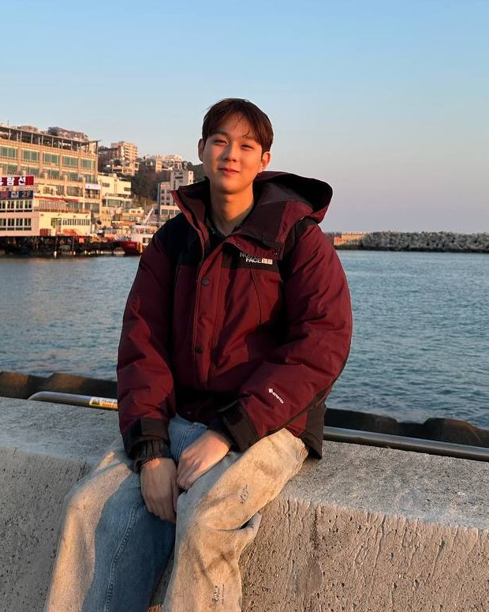

NUS · Business Analytics · Class of 2029
I'm a second-year Business Analytics student at NUS, with a minor in Quantitative Finance. I like spotting opportunities in everyday life and doing something about them.
That started with sourcing streetwear from Japan for buyers in Singapore. At Enterprise Singapore, assessing founders' business plans pushed me to think beyond a good opportunity to what makes a business viable. Now, I'm applying both instincts to nearbites: helping students find surplus food on campus before it goes to waste.
Building nearbites · exploring its commercial potential
From spotting opportunities to building a business.
My early ventures taught me to spot opportunities and act, but their business models were straightforward. At Enterprise Singapore, assessing EntrePass applications and analysing more than 200 partners showed me entrepreneurship from the other side. I learned to distinguish a compelling pitch from a viable business—and realised how much I still had to learn about building one.
nearbites is my first step towards turning an idea into a product people can use. Through NOC, I want to work alongside founders in an overseas startup, learn how they test demand and make product decisions, and bring those lessons back to my own ventures. I want to develop the judgement to take an idea from imagination to a business that earns its place in people's lives.
What I started, what I contributed, and what I learned.
Co-founder · NUS Orbital 2026, Apollo
In development · Apollo · tested with five students
A problem I felt personally: surplus food on campus, but no reliable way to find it. I used the summer to learn React Native and co-build nearbites, turning that frustration into a working app.
nearbites grew from a real frustration in my own campus life. Food-sharing messages were easy to miss and often lacked clear collection details. Summer gave me the time to learn the tools and build a solution.
In our two-person team, I built authentication, onboarding, posting, the feed and campus map, plus the Appwrite data layer. Students can find food by distance and expiry, with dietary and pickup details.
Five NUS students tested the app independently. All completed onboarding and found listings; four said they would use it. Their feedback led to clearer pickup instructions and automatic removal of stale posts.
We attained Orbital Apollo. The core flows are built and tested; push notifications remain unresolved. My next question is how to turn an initial working product into something people use consistently.
A shared authentication service and React Context keep user state consistent. Jest tests run through GitHub Actions, covering distance, expiry, visibility and post validation.
I fixed inconsistent date parsing and incorrect upload file sizes. Testing also exposed a product issue: a correct GPS address still does not tell someone which room to collect food from.
Notification backend components were tested in isolation, but device token registration failed. End-to-end push delivery is not yet working.
TikTok CodeJam 2026, Track 2 (Autonomous ML) · five-person team
Completed · validation 0.6016 → 0.6035 · single seed
Built an agent that experiments with a recommender pipeline. I owned the LLM interface, prompts and response handling, translating model suggestions into executable experiments.
Our five-person team built an agent that proposes, codes, trains and evaluates changes to a recommender pipeline, then keeps or reverts each experiment.
I owned llm.py and prompts.py: prompt construction, code extraction, experiment history, retries and token tracking. The interface supports compatible providers through configuration.
Validation improved from 0.6016 to 0.6035 on a single-seed run using CPU and a free API tier. The improvement is preliminary; repeated runs are needed to establish reliability.
Different feature proposals produced identical scores because the encoder sat outside the agent's editable files. An agent needs the ability to change what it reasons about.
I added an out-of-fold encoding requirement to address leakage. I also identified truncated model outputs and Windows encoding issues that corrupted generated files.
Subprocesses and timeouts control execution, but do not securely isolate generated code. The measured improvement also needs validation across seeds.
BT2102 · six-person team · R and Tableau
Completed · academic project
Used R and Tableau in a six-person team to analyse Beijing housing data and recommend where to invest, what to develop and when to enter the market.
For an academic property-market brief, our team translated transaction data into investment and development recommendations across Beijing districts.
We cleaned the data, compared districts and property features, and used Welch t-tests, forecasts and an opportunity index to support recommendations.
Our analysis identified Chaoyang for premium investment and Xicheng for redevelopment potential. The different recommendations reflect different objectives.
Some central districts showed a negative elevator premium. Older housing stock offered a possible explanation, reinforcing the need to question apparent patterns before recommending action. Observational comparisons do not establish causation.
Days-on-market was missing for roughly half the dataset. We excluded that variable rather than discarding the rows. Findings were limited to the urban districts represented.
Project Analyst (intern) · Startup Ecosystem, Innovation Group
Completed · six months
Assessed EntrePass applications from foreign founders and ran a reappointment analysis across 200+ partners. This experience changed how I evaluate business ideas—including my own.
Reviewed business plans and financial documents against EntrePass criteria, followed up with applicants, and progressed to hosting partner meetings independently.
Gathered and verified data on more than 200 partners, built the Excel analysis supporting reappointment decisions, and documented the process for the next team.
Reading founders' plans taught me to distinguish a convincing story from a viable business. It also exposed the gap between evaluating someone else's ideas and building my own.
That experience shaped my ambition for nearbites: to understand the customers, assumptions and business model behind the product, and learn what it takes to make it sustainable.
Sole operator
Completed · self-funded throughout
Spotted a streetwear price gap between Japan and Singapore and built a self-funded sourcing business. Managed supplier relationships, pricing and inventory, later expanding into Thailand.
Frequent trips to Japan exposed a price gap for the same streetwear pieces in Singapore. Conversational Japanese helped me build relationships with shop staff and source upcoming releases.
Handled sourcing, authentication, pricing and cash flow. With my own money tied up in inventory, every buying decision carried a real cost.
Pricing from my own expectations left stock unsold for months. I learned to check actual transaction prices before committing capital.
This taught me to act on opportunities and take responsibility for the outcome. It also made me want to progress from selling existing products to creating something of my own.
Founder · Ngee Ann Polytechnic
Completed · handed over on graduation
Founded a student volunteering organisation to build lasting community partnerships. Ran sessions with Enabling Village and Extraordinary People and helped develop a proposal for more inclusive school spaces.
I wanted volunteering to build ongoing relationships. We partnered with Enabling Village and Extraordinary People to run regular art and engagement sessions.
We explored how mainstream schools could better support students with special educational needs through educator interviews, site visits and root cause analysis.
Our team pitched practical recommendations to educators and lecturers, inviting feedback from people who understood the problem first-hand.
Keeping volunteers involved required meaningful work and continuity. I handed the organisation to the next cohort on graduation, learning that starting something also means planning for others to sustain it.
Team lead · industry partner project · top 4 of cohort
Completed · Ngee Ann Polytechnic
Led a top-four cohort team on a New Balance industry project. Developed the balance, a Gen Z campaign proposal connecting brand positioning with product, retail and media concepts.
Our team explored how New Balance could strengthen its relevance to Gen Z in Singapore, taking local brand perceptions into account.
We proposed the balance, a gender-equality campaign built around the 550 silhouette and an N X B identity.
Concepts included interchangeable shoe panels, a shoebox pop-up and participatory retail experiences, supported by social content and proposed partnerships.
Our proposal placed in the top four of the cohort. I learned to connect a brand idea to experiences customers could understand and engage with. This was a campaign proposal, not a launched campaign.
Student coordinator · Ngee Ann Polytechnic
Completed · ran for the incoming cohort
Coordinated a year-long orientation effort with minimal mentor oversight. Helped fund the camp through original merchandise and developed activities with the student committee.
Coordinated weekly committee meetings over a year, keeping decisions and preparation moving with limited mentor oversight.
Designed shirt artwork in Photoshop and helped organise production and sales. Proceeds funded camp identities and games.
Our committee created and trialled original activities before running them for the incoming cohort.
Long projects need visible progress. The shirt project gave the team an early result and helped sustain commitment well before camp day.
Patrol Leader · Dragon Scouts, Gan Eng Seng School
Completed · first time leading a group overseas
Led my scout unit on an overseas exchange to Chiang Mai, coordinating transport, attendance, safety and activities under the accompanying teachers.
As the main student leader, I coordinated logistics and activities while our unit trained and camped with Thai scouts.
Being accountable for peers in an unfamiliar country taught me to notice problems early and take responsibility for people as well as plans.
Appointed Patrol Leader in 2018 and received the General Service Award (Bronze). Also helped organise unit events, including the annual campfire.
What I can contribute to a startup team.
Learned React Native and co-built a tested app in twelve weeks. I pick up unfamiliar tools, work through bugs and turn feedback into improvements.
Turn messy data into clear recommendations, with the assumptions and limitations made explicit.
From sourcing streetwear to founding a volunteering organisation and co-building nearbites, I take initiative and follow through.
BSc Business Analytics, minor in Quantitative Finance. NUS, 2025–2029.
0 of 160 units done